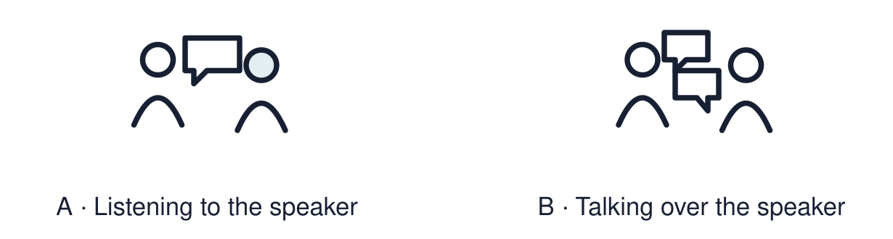

Arrival choices
Previous lesson reminder:

Start with 1 and 2. Try 3 and 4 when ready. Reading and exact scribing are available.
1 When is the International Day of Peace?
Support: Use the reminder strip or talk it through with an adult.
2 Which meaning fits meaning?
Support: Choose: What something stands for or why it matters OR Something you remember.
3 What can make an object special?
Support: Use the model evidence anchor B, C or read one relevant card together.
4 Do you have to share a real object from home?
Support: Give a reason when ready.
Stretch: use a precise example or explain which detail supports your answer.
Evidence cards
Read, point or listen. Keep the source label with any detail you use.
A Speaking frame
This is ___. It is special because ___. A short share lasts about 20 seconds.
Source: Authored classroom resource
Limit: A frame is a support. Your own words are welcome.
B Object card: a key ring
Fictional case: Lee has a key ring from a seaside trip. It reminds Lee of a day out with an aunt.
Source: Authored classroom case
Limit: This example does not describe every person, family or community.
C Object card: prayer beads
Some people use beads to help them pray or reflect. For them the beads link to belief.
Source: Authored RE summary
Limit: Beads are used in different ways in different faiths. Some people use none.
D Respectful listening
Give the speaker time. Listen in a way that works for you; eye contact is optional. Choose a kind comment or respectful question. Sharing privately with an adult is welcome.
Source: Authored classroom rules
Limit: Listening can look different for different people. Eye contact is not required.
Shared investigation
1. Match each object card to the reason it is special.
2. Practise one 20-second share using the frame.
Work with a partner or adult, or use your own table. One person suggests; the other checks the evidence. Swap after one turn. Passing is allowed.
Move or match the cards
| Cards to use |
|---|
| A medal from a relative |
| Prayer beads |
| Seaside key ring |
Possible labels: A belief / A memory / A person
Support: Show two choices. Read one short instruction. Point, match or say a word, then add a reason when ready.
Further challenge: Explain what a good listener does and why it matters to the speaker.
Supported independent task
Complete this route only. Share or describe a 'special to me' object respectfully.
1. Choose an object card, photo or drawing.
2. Point to the reason it is special.
3. Share with one adult using: This is ___.
Support: Show two choices. Read one short instruction. Point, match or say a word, then add a reason when ready. Complete the organiser one space at a time. This is ___. It is special because ___.
An adult may read or scribe your exact response. They should not choose the answer.
Standard independent task
Complete this route only. Share or describe a 'special to me' object respectfully.
1. Choose a real object, photo, drawing or object card.
2. Practise the frame: This is ___. It is special because ___.
3. Share with an adult or a small group.
Support: This is ___. It is special because ___.
Check the required evidence and revise one detail.
Stretch independent task
Complete this route only. Share or describe a 'special to me' object respectfully.
1. Share your object and reason with the group or an adult.
2. Answer one question from a listener.
3. Say one respectful thing about someone else’s share.
Support: Choose the evidence independently. Use the frame only if it helps.
Explain what a good listener does and why it matters to the speaker.
Exit ticket
Choose a response mode. You may give your answers privately to an adult.
What can make an object special?
Do you have to share a real object from home?
Support: This is ___. It is special because ___.
Further challenge: Explain what a good listener does and why it matters to the speaker.